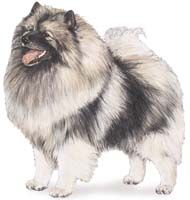

|
KEESHOND BREED STANDARD
Non-Sporting Group |
СТАНДАРТ ПОРОДЫ КЕЕСХОНД
Группа без спортивных испытаний |
 |
GENERAL APPEARANCE:
The Keeshond (pronounced kayz-hawnd) is a natural, handsome dog of well-balanced,
short-coupled body, attracting attention not only by his coloration, alert
carriage, and intelligent expression, but also by his stand-off coat, his richly
plumed tail well curled over his back, his foxlike expression, and his small
pointed ears. His coat is very thick around the neck, fore part of the shoulders
and chest, forming a lion-like ruff-more profuse in the male. His rump and hind
legs, down to the hocks, are also thickly coated, forming the characteristic "trousers."
His head, ears, and lower legs are covered with thick, short hair. |
ОБЩЕЕ ВПЕЧАТЛЕНИЕ:
Кеесхонд - привлекательная, естественная,
красивая, гармонично сложенная, компактная собака. Он привлекает
внимание не только своим внимательным поведением, ловкостью и умным
выражением глаз, но и вертикально стоящей шерстью, закинутым над
спиной хвостом, покрытым роскошной шерстью, головой, как у лисы, и
маленькими стоячими ушами. Густая шерсть вокруг шеи, на передней
части плеч и груди образует львиную гриву, более пышную у кобелей.
Крестец и задние ноги до скакательных суставов также покрыты густой
шерстью, образующей характерные "штаны". Голова, уши, пясти и плюсны
покрыты густой, короткой шерстью. |
SIZE, PROPORTION,
SUBSTANCE: The Keeshond is a medium-sized, square-appearing, sturdy dog, neither coarse nor
lightly made. The ideal height of fully matured dogs when measured from top of
withers to the ground is 18 inches for males and 17 inches for bitches-a one
inch variance either way is acceptable. While correct size is very important, it
should not outweigh that of type. |
РАЗМЕР, ПРОПОРЦИИ,
СУЩНОСТЬ: Кеесхонд - крепкая, среднего размера собака, не
слишком грубого и не слишком легкого сложения.. Идеальная
высота сформировавшейся собаки (старше 2 лет) для кобелей - 18
дюймов (45,7см), сук- 17 дюймов (43,2 см). Однако, гармоничное
сложение важнее, чем размер собаки. Когда сравниваются собаки
одинакового типа, предпочтение отдается собаке идеального роста. |
HEAD: Expression-Expression is largely dependent on the distinctive characteristic
called "spectacles"–a combination of markings and shadings in the orbital area
which must include a delicate, dark line slanting from the outer corner of each
eye toward the lower corner of each ear coupled with expressive eyebrows.
Markings (or shadings) on face and head must present a pleasing appearance,
imparting to the dog an alert and intelligent expression.
Very Serious Fault:
Absence of dark lines which form the "spectacles." |
ГОЛОВА: Выражение
собаки в основном зависит от так называемых "очков", которые
являются характерной особенностью собаки. "Очки" - сочетание пятен и
оттенков вокруг глаз, включая тонкую темную линию, косо идущую от
наружного угла глаза, и выразительные брови. Пятна и оттенки на
морде и голове придают собаке внимательное и умное выражение.
Очень серьезный недостаток:
Отсутствие темных линий, которые образуют "очки". |
Eyes – Eyes should be dark brown in color, of medium size, almond shaped, set
obliquely and neither too wide apart nor too close together. Eye rims are black.
Faults: Round and/or protruding eyes or eyes light of color. |
Глаза – Глаза должны быть темно-коричневыми, среднего размера, несколько овальными, косо, не слишком широко и не слишком близко поставленными, края век черные.
Недостатки: Круглые и/или выпуклые глаза или светлые глаза. |
Ears – Ears should be small, triangular in shape, mounted high on head and
carried erect. Size should be proportionate to the head-length approximating the
distance from the outer corner of the eye to the nearest edge of the ear.
Fault:
Ears not carried erect when at attention. |
Ears – уши должны быть маленькими,
треугольными, высоко поставленными и стоячими. Размер их должен быть
пропорциональным голове - длина внутреннего края уха примерно равна
расстоянию от внешнего угла глаз до ближайшего края уха.
Недостаток:
Когда собака находится во внимании, уши не стоят. |
Skull – The head should be well-proportioned to the body and wedge-shaped when
viewed from above-not only the muzzle, but the whole head should give this
impression when the ears are drawn back by covering the nape of the neck and the
ears with one hand. Head in profile should exhibit a definite stop.
Faults:
Apple head or absence of stop. |
Черепная часть – Голова должна быть
пропорциональна корпусу, клинообразна при виде сверху. Клинообразно
должна выглядеть вся голова, включая морду. Такая форма становится
заметной, если прижать руками уши и воротник и взглянуть на голову
собаки сверху. Переход от лба к морде заметно выражен.
Недостатки:
Голова в форме яблока или плоская голова. |
Muzzle – Of medium length, neither coarse nor snipey, and well proportioned to
the skull. |
Морда - средней длины, не заостренная, не
грубая, пропорциональна черепу. |
Mouth – The mouth should be neither overshot nor undershot. Lips should be black
and closely meeting-not thick, coarse or sagging, and with no wrinkle at the
corner of the mouth.
Faults: Overshot, undershot or wry mouth. |
Челюсть – Не допускается недокус и перекус
челюсти. Губы должны быть черными, плотно прилегающими, не толстыми,
не грубыми и не отвислыми, без складок кожи в углах рта.
Недостатки: Недокус, перекус и перекос челюсти. |
Teeth – The teeth should be white,
sound and strong meeting in a scissors
bite.
Fault: Misaligned teeth. |
Зубы – Зубы должны быть белыми, здоровыми и
крепкие. Внутренняя сторона верхних резцов должна плотно прилегать к
наружной стороне нижних резцов.
Недостаток: Резцы расположены не в линию. |
NECK,
TOPLINE,
BODY
The neck should be moderately long, well-shaped and well set on shoulders. The
body should be compact with a short, straight back sloping slightly downward
toward the hindquarters: well ribbed, barrel well rounded, short in loin, belly
moderately tucked up, deep and strong of chest. |
ШЕЯ, ЛИНИЯ ВЕРХА, КОРПУС
Шея должна быть средней длины, хорошей формы, плавно
переходящая в холку. Корпус должен быть компактным с короткой,
крепкой, прямой спиной и короткой поясницей, слегка понижающейся к
крупу. Грудная клетка хорошо развита, глубокая, сильная, ребра
округлые, живот умеренно подтянут. |
Tail – The tail should be moderately long and well feathered, set on high and
tightly curled over the back. It should lie flat and close to the body. The tail
must form a part of the "silhouette" of the dog’s body, rather than give the
appearance of an appendage.
Fault: Tail not lying close to the back. |
Хвост - Высоко
посажен, средней длины, обильно покрыт густой длинной шерстью,
поднят в тугом кольце над спиной и плотно прижат к корпусу. Хвост
составляет часть силуэта собаки, а не просто дополнение к нему.
Недостаток: хвост неплотно
лежит на спине. |
Forequarters – Forelegs should be straight seen from any angle. Pasterns are
strong with a slight slope. Legs must be of good bone in proportion to the
overall dog. Shoulder to upper arm angulation is between slight to moderate. |
Передние конечности – Передние конечности
должны выглядеть прямыми, при взгляде с любого угла, с крепким
костяком, пропорциональным общему сложению собаки. Углы передних
конечностей от низко до умеренно выраженных. |
| Hindquarters – Angulation in rear should be between slight to moderate to
complement the forequarters, creating balance and typical gait. Hindquarters are
well muscled with hocks perpendicular to the ground. |
Задние конечности – углы задних от
низко до умеренно выраженных, создавая баланс и типичную походку.
Задние конечности мускулистые с отвесными плюснами. |
|
Feet – The feet should be compact, well rounded, cat-like. Toes are nicely
arched, with black nails. |
Лапы – Лапы должны быть компактными,
округлыми, "кошачьими". Пальцы красиво округлены, с черными когтями. |
COAT
The body should be abundantly covered with long, straight, harsh hair standing
well out from a thick, downy undercoat. Head, including muzzle, skull and ears,
should be covered with smooth, soft, short hair--velvety in texture on the ears.
The neck is covered with a mane--more profuse in the male--sweeping from under
the jaw and covering the whole of the front part of the shoulders and chest, as
well as the top part of the shoulders. The hair on the legs should be smooth and
short, except for feathering on the front legs and "trousers" on the hind legs.
Hind legs should be profusely feathered down to the hocks-not below. The hair on
the tail should form a rich plume. Coat must not part down the back. The
Keeshond is to be shown in a natural state with trimming permissible only on
feet, pasterns, hocks and--if desired--whiskers. TRIMMING OTHER THAN AS
DESCRIBED TO BE SEVERELY PENALIZED.
Faults: Silky, wavy, or curly coats. Part in
coat down the back. |
ШЕРСТНЫЙ ПОКРОВ
Корпус густо покрыт длинной, прямой, жесткой на ощупь шерстью,
вертикально стоящей над густым, пушистым подшерстком. Голова,
включая морду, череп и уши, покрыта мягкой, гладкой, короткой
шерстью, на ушах бархатистой на ощупь.
На шее шерсть образует "гриву", более густую у кобелей, спереди переходит в
"жабо", которое спускается из-под нижней челюсти, покрывая часть
плеч и грудь спереди. Шерсть на пястях и плюснах плотно прилегающая
и короткая, за исключением очесов на передних и "штанов" на задних
конечностях, доходящих до скакательных суставов, но не ниже. Хвост
покрыт длинной пышной шерстью, формирующей богатый "плюмаж".
Кеесхонд должен экспонироваться в своем естественном виде, триминг
разрешается только на лапах, пястях, плюснах, и, по желанию, на
усах. ТРИМИНГ, ПОМИМО ОПИСАННОГО ВЫШЕ, ДОЛЖЕН СТРОГО НАКАЗЫВАТЬСЯ.
Недостатки: шелковистая, волнистая или курчавая шерсть;
шерсть, распадающаяся на пробор вдоль спины. |
COLOR AND MARKINGS
A dramatically marked dog, the Keeshond is a mixture of gray, black and cream.
This coloration may vary from light to dark. The hair of the outer coat is black
tipped, the length of the black tips producing the characteristic shading of
color. Puppies are often less intensely marked. The undercoat is very pale gray
or cream, never tawny.
|
ОКРАС И ОТМЕТИНЫКонтрастно окрашенная собака, кеесхонд представляет собой смесь серого черного и кремового.
Цвет может меняться от светлого до темного. Покровные волосы черные
на концах - от длины черных кончиков зависит характерный оттенок
окраса. Часто щенки менее интенсивно окрашены. Подшерсток светлый -
бледно-серый или кремовый, но не бурый. |
Head – The muzzle should be dark in color. "Spectacles" and shadings, as
previously described, are characteristic of the breed and must be present to
some degree. Ears should be very dark-almost black.
Ruff, Shoulders and "Trousers" – The color of the ruff and "trousers" is lighter
than that of the body. The shoulder line markings of light gray must be well
defined.
Tail – The plume of the tail is very light in color when curled on the back, and
the tip of the tail should be black.
Legs and Feet – Legs and feet are cream. Faults: Pronounced white markings. Black markings more than halfway down the foreleg, penciling excepted. White foot or feet.
Very serious faults– Entirely black or white or any solid color; any pronounced
deviation from the color as described. |
Голова– морда темная, "очки" являются
особенностью породы и обязательны. Уши очень темные - почти черные.
Воротник, плечи и "штаны" – Окрас "гривы" и
"штанов" светлее, чем корпус. Светло-серые полосы, идущие от холки
вниз, должны быть четкими.
Хвост – Длинная шерсть на нижней стороне хвоста очень
светлого окраса, что особенно заметно, когда он закинут на спину,
кончик хвоста черный.
Конечности и лапы - Конечности и лапы кремовые.
Недостатки: белые пятна; черные пятна, занимающие более
половины передних ног, за исключением черных полос на пальцах, белые
лапы.
Пороки– черный, белый или иной сплошной окрас; любое
отклонение от описанного окраса.
|
GAIT
The distinctive gait of the Keeshond is unique to the breed. Dogs should move
boldly and keep tails curled over the back. They should move cleanly and briskly;
the movement should be straight and sharp with reach and drive between slight to
moderate. |
ДВИЖЕНИЯ
Движения собак этой породы уникальны. Кеесхонд движется уверенно, с
хвостом, закинутым на спину, движения прямолинейные, стремительные и
быстрые - рысь, средняя между стелющейся, как у немецкой овчарки, и
резкой, как у пуделя. |
TEMPERAMENT
Temperament is of primary importance. The Keeshond is neither timid nor
aggressive but, instead, is outgoing and friendly with both people and other
dogs. The Keeshond is a lively, intelligent, alert and affectionate companion.
|
ХАРАКТЕР
Характер имеет первостепенное значение. Кеесхонд не робкий и не
агрессивный, а, наоборот, общителен и дружелюбен как с людьми, так и
с другими собаками. Кеесхонд - энергичный, веселый, бдительный и
преданный компаньон. |
Approved November 14, 1989
Effective January 1, 1990 |
Утвержден 14 ноября 1989г.
Действует с 1 января 1990г. |
| Source: http://www.akc.org/breeds/keeshond/index.cfm |
Истоник: по мотивам книги "Шпиц" В.И. Крутовой, питомник "Русское Серебро" |